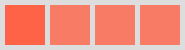
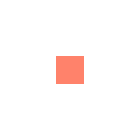
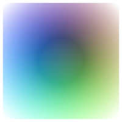
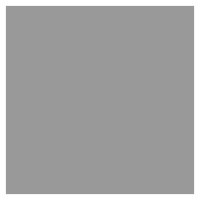
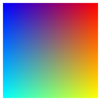

Colors and images¶
Colors¶
Colors are Color values with red, green, blue and alpha as floats in 0..1
(as in matplotlib). Anything that takes a color also takes a name, CSS text or a 3/4-tuple or array:
import svgwriter as svg
svg.rect(0, 0, 1, 1, fill="tomato")
svg.rect(0, 0, 1, 1, fill="#ff6347cc")
svg.rect(0, 0, 1, 1, fill="rgba(255, 99, 71, 0.8)")
svg.rect(0, 0, 1, 1, fill=(1.0, 0.39, 0.28, 0.8))
c = svg.Color.from_uint8(255, 99, 71) # 0..255 values are explicit
print(c.hex, c.rgba, c.uint8)
print(c.lighten(0.2).hex, c.mix("navy").hex, (c * 0.5).hex)



Tuples are always 0..1; a value above 1 raises and points to Color.from_uint8. SVG 1.1 has no alpha
in colors, so a translucent fill, stroke, stop-color or flood-color also writes the matching
*-opacity attribute:
print(svg.rect(0, 0, 1, 1, fill=(1, 0, 0, 0.5))) # fill="#ff0000" fill-opacity="0.5"
CSS Color 4 text¶
Color.parse (and every color argument) reads the CSS Color 4 functions and converts them to sRGB:
Syntax |
Channels |
|---|---|
|
numbers are 0..255, percentages 0..100% |
|
hue ( |
|
CIE Lab/LCH on a D50 white |
|
OKLab/OKLCH |
|
|
|
naive CMYK with no profile |
Comma and space-separated forms both work, / alpha sets the opacity and none is a zero channel.
For press-accurate CMYK use an ICC profile: a trailing icc-color(...) is kept with the color.
Wide-gamut colors keep their space¶
hex, rgba and the SVG output are always sRGB, so colors outside its gamut (most of Display P3,
Rec. 2020 and high-chroma OKLCH) are clipped there. The color itself is not: a color parsed from
lab(), lch(), oklab(), oklch() or color(<space> ...) keeps its space and exact channels, and
mixing, tints, shades, differences and to_css start from them:
green = svg.Color.parse("color(display-p3 0 1 0)")
green.hex, green.space, green.in_gamut # ('#00ff00', 'display-p3', False)
green.coords("oklch") # exact OKLCH channels, unclipped
green.mix("white", 0.5, space="display-p3").to_css("display-p3") # 'color(display-p3 0.5 1 0.5)'
svg.Color.from_space("oklch", (0.7, 0.3, 145)) # build one directly
Spaces are srgb, srgb-linear, display-p3, a98-rgb, rec2020, xyz-d65, xyz-d50, lab,
lch, oklab and oklch. Colors given in sRGB (names, hex, rgb(), hsl(), tuples) carry no
source and behave exactly as plain sRGB values; conversions are cached.
to_css(space) writes CSS text in any of those spaces, plus hsl and hwb; the default "srgb" gives
the name, hex or rgba(...):
c = svg.Color.parse("tomato")
c.to_css(), c.to_css("oklch", precision=3), c.to_css("display-p3")
# ('tomato', 'oklch(0.696 0.196 32.321)', 'color(display-p3 0.9283 0.4286 0.3199)')
Adjusting colors¶
c = svg.Color.parse("#0f766e")
c.lighten(0.1), c.darken(0.1) # HSL lightness
c.saturate(0.2), c.desaturate(0.2) # HSL saturation
c.hue_shift(30), c.complement() # HSL hue
c.grayscale(), c.invert() # same perceived lightness; negative
c.tint(0.3), c.shade(0.3) # mixed with white or black in OKLab
c.mix("white", 0.3, space="oklch") # "srgb" (default), "linear", "display-p3", "lab", "lch",
# "oklab", "oklch" or "xyz"
c.posterize(4), c.sepia(0.8) # 4 levels per channel; the CSS sepia() filter
c.gamma(2.2) # every channel to a power, as feFuncX type="gamma"
c.contrast("white"), c.is_dark # WCAG ratio; whether white text reads better
c.readable() # black or white, whichever has more contrast on c
c.delta("#0f7a70"), c.delta_e2000("#0f7a70") # OKLab distance; CIEDE2000
lighten and darken move HSL lightness: they reach pure white and black at the ends and keep the hue,
which is what palettes expect. tint and shade mix with white or black in OKLab instead: white and
black lie on OKLab’s neutral axis, so the OKLab hue stays exactly the same and lightness changes in
perceptually even steps. space="linear" mixes light as it adds physically.
delta is the Euclidean distance in OKLab (about 0.02 is just noticeable); delta_e2000 is the
CIEDE2000 formula on CIE Lab, the standard in print and colour science (about 1 is just noticeable).
Colour profiles¶
SVG 1.1 colours are sRGB, optionally followed by an icc-color(...) in an ICC profile declared with
<color-profile>. Rendering converts them through the profile; without the profile, the sRGB colour
before icc-color is drawn:
doc = svg.Document(100, 100)
doc.add(svg.ColorProfile("print", "press.icc", rendering_intent="relative-colorimetric"))
ink = svg.Color.parse("#2b6cb0").with_icc("icc-color(print, 0.9, 0.4, 0, 0.1)")
doc.rect(10, 10, 80, 80, fill=ink)
icc-color works in fill, stroke, stop-color, flood-color and lighting-color. The profile’s
xlink:href may be a path (relative to the document), a file: URL or a data: URI. Images use the
color-profile property: auto (the default) applies the profile embedded in a PNG (iCCP) or JPEG
(APP2), sRGB reads the stored values as sRGB, and a profile name or url(#id) assigns one:
doc.add(svg.Image("scan.png", 0, 0, 100, 100, color_profile="print"))
Pixels.decode(data, profile=..., intent=...) does the same for raw image bytes.
Images are numpy arrays¶
svg.Image(array) embeds pixels. They are stored as color, a float32 (H, W, 3) array (or
(H, W, 1) for grayscale) in 0..1, and alpha, which is the scalar 1.0 when the image is opaque or
an (H, W, 1) array, so color * alpha always broadcasts.
import numpy as np
y, x = np.mgrid[0:64, 0:64] / 63
img = svg.Image(np.dstack([x, y, 1 - x]), 10, 10, 80, 80) # floats 0..1
img.alpha = np.clip(1.4 - 2 * np.hypot(x - 0.5, y - 0.5), 0, 1) # (H, W) broadcasts
img.color[..., 0] *= 0.5 # edit in place
print(img.shape, img.color.dtype, img.alpha.shape)
data = img.encode("png")

uint8 arrays are divided by 255. Image.open("photo.jpg") decodes a file; Image("photo.jpg", ...)
links to it instead (linked local files are drawn when rendering). Images are written as PNG data: URIs.
Any element can become an image: el.to_image(scale=2) rasterizes it and places the result where the
element was.
Patterns¶
A <pattern> repeats a tile. It converts both ways:
dots = svg.Pattern(svg.circle(5, 5, 3, fill="crimson"), width=10, height=10, pattern_units="userSpaceOnUse")
tile = dots.to_image(scale=4) # one tile as pixels
again = svg.Pattern.from_image(tile) # pixels as a pattern
badge = svg.circle(30, 30, 25, fill=dots, stroke="black")
plain = badge.expand_pattern() # tiles clipped to the circle: plain vector graphics
expand_pattern() is for targets without pattern support (plotters, cutters, some editors);
pattern.tiles(area) gives the tile copies on their own.
Compositing images¶
An image’s pixels combine with the Porter-Duff operators of feComposite: on Pixels, a | b is
a over b, a & b keeps a where b is opaque, a - b keeps a where b is not, and a ^ b
keeps whatever is not shared. a * b is the multiply blend. a.composite(b, operator) takes any
feComposite operator or feBlend mode by name: "over", "in", "out", "atop", "xor",
"arithmetic" (with k=(k1, k2, k3, k4)), "multiply", "screen", "darken", "lighten".
photo = svg.Image(np.dstack([x, y, 1 - x])) # 64 x 64
shadow = svg.Image(np.zeros((64, 64)), alpha=0.4)
card = photo.pixels | shadow.pixels # over, pixel for pixel
glow = photo.pixels.composite(shadow.pixels, "screen")
badge = photo.pixels & svg.circle(32, 32, 32) # masked by a shape
title = photo.pixels.on_grid(svg.text("hi", x=4, y=20, fill="white")) | photo.pixels # text over the photo
print(card.shape, svg.Image(badge.rgba()).shape)


Two pixel grids combine pixel for pixel, so their shapes must broadcast. An element or a whole document
on the other side is first drawn onto the pixels’ own grid (one user unit per pixel, origin at the
top-left pixel); pixels.on_grid(element) gives that rendering by itself. svg.Image(pixels.rgba())
places a result. On
elements the operators keep their other meanings: img * 2 scales and img - (dx, dy) moves.
svgwriter.ops.composite_rgba works on raw RGBA arrays that broadcast, so a (1, 1, 4) color
composites onto a whole image.